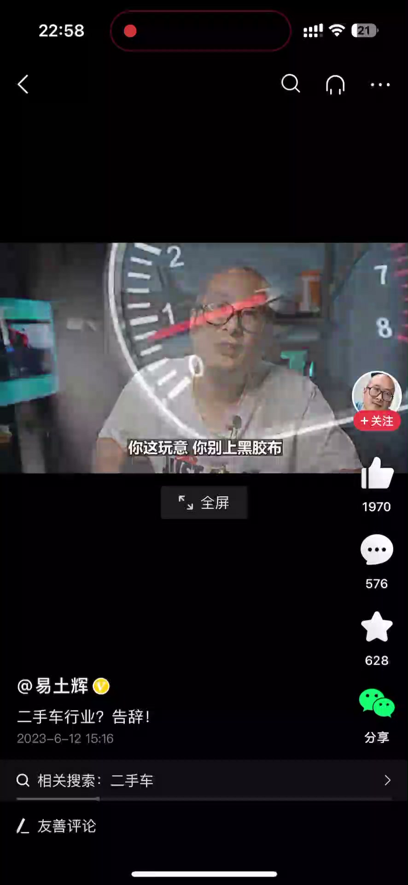

内容要点
一位停更两个月、刚从心理问题中恢复的二手车从业者，讲完自己七年的行业故事：从做车商自媒体做到 50 万粉丝、因拒绝推销问题车而与老板博弈、入股改制走正规经营，到联合合伙人扩张后四个月只赚 9000 块钱。他派团队考察上海、武汉、长沙，发现大的车行照样瑕疵车当精品卖、调表、骗定金——诚信的人被淘汰，不诚信的人盆满钵满。他说：当道德摆在生存面前，显得非常渺小；但我情愿饿死，也不愿意这么做。
知识结构
2018年入行成都白家二手车市场，做车商自媒体，8个月只有200粉丝；2019年切成每分钟一条发抖音，三个月涨到50万粉丝。
拒绝推销车况糟糕的问题车（老板的底线是不遮故障灯）；2020年入股20%后逐步淘汰问题车，销量变好利润却更少。
联合四人盘下150个车位，四个月总盈利9000元；考察发现大车行照样调表、骗定金、逃税，不诚信者盆满钵满，诚信者濒临倒闭。
二手车行业的真相是：不开挂的诚信者在饿死，开挂的反而活得好——当道德摆在生存面前显得渺小。讲者拒绝同流合污，选择退出，但他说不后悔。
00:00-01:35入行与自媒体起步
开场自述：大家好，我是易同辉。我差不多停更了两个月了，最近心理上出点问题，通过一些治疗，现在算是好多了。如果你恰好现在有空的话，不妨听听我给你唠两句，或许能给你带来一些其他方面的帮助。
我曾经是一位二手车行业的从业者，2018年5月30号入行，当时以打工者的身份入驻了一家叫做「车老会」的车行。车行不大，在成都的白家二手车市场，大概有15个车位的规模。
我本来就对自媒体比较有兴趣，再加上当时的老板思想也非常前卫，我们就做起了当时很多车商想都没想过的东西——车商自媒体。一开始我是做幕后拍摄、文案、剪辑、编导、摄像，都是我一个人在干，以至于到最后我连摄像我都一起干。本来车行很小，开支肯定以节约为主，按道理一个团队才能干的活，最后全部就到我一个人手上了。
当然任何事情都不是顺风顺水。自媒体做了大半年一点起色都没有，8个月过去了，粉丝当时就只有200个，好像200多。直到2019年初，我们把之前发到其他平台的视频，以每分钟切一片的形式发到抖音上（当时抖音最长好像只能发一分钟），就在那个时候，粉丝量迎来了井喷式的增长——短短三个月，粉丝一下就涨到了50多万。

01:36-03:10拒绝问题车，入股改制
粉丝有了，老板肯定想让你多拍点他的车、让他车多卖点、多曝光一下，不过我拒绝了。当时车老会有些产品让我个人感觉非常反感——倒不是说卖事故车，事故车他是不卖的，这个大概是没有的。我指的是那种车况一言难尽的车：你有幸能买到早期车老会的这类产品，大概率会成为你们家附近修理厂的VIP。
这些车虽然没有事故，但是车况非常非常糟糕，公里数还大，机械工况也差，仪表上的故障灯是清了亮、亮了清、清了亮、亮了清。这也是为什么当时有人买车以后不到一个礼拜就想退车的原因，售后问题更是烦不胜烦。
不过我欣赏当时老板的一个底线：坏的你就修，这玩意儿你别上黑胶布，也就是说不遮故障灯。对当时的车老会来说这是底线，就这个底线，在当时的二手车行业也算是有点良心。
那有人就要问了：既然这些产品这么垃圾，卖出去售后这么麻烦，那为什么还要去收呢？我这么跟你说：假如正常一台车的市场价值10万块钱，精品车收购价顶多就9万；而这些车况和工况很糟糕的车，收购价就有可能不到8万、甚至不到7万，如果年份再老一点，差价甚至会更大。也就是说收这种车，利润要远远高于精品车。只需要简单的维修翻新一下，15万公里的车看起来跟5万公里的也差不了多少——当然我说的是外行看，普通消费者看不出什么差别，专业人士能看出来。最后这些车再拿到市场上去卖，比行情价便宜个3000到5000块钱，利润高不说，还比精品车卖得快。
所以我当时就拒绝帮老板去推销这种二手车。有人说：你个臭打工的，凭什么拒绝老板？因为这个媒体号是我的，这个眼视要我来露的，所以我不干这个，有毛病吗？
直到2020年，我跟老板洗脑，然后我们才逐步淘汰了这种产品。这个时候我就占到了车行的20%的股份。而从入股车行开始，车行就开始走上坡路：开始正常收车卖车，那些什么事故车就没有了，销量比之前好很多，但是钱却比之前挣得少得多。
我不知道为啥。一开始我们觉得可能是库存量不够，然后我们就加库存量，随之而来车也卖更多了，但是依然不见利润上涨。直到去年11月份，我们依然认为库存和销量不够，于是在去年12月，联合了四个合伙人一起盘下了接近4000平米的场地，整整150个车位。
03:11-05:48行业真相：诚信者出局
从12月份开始一直到今年3月份，我们每个月的库销比基本上都是大于1的——我们厅里有多少台车，基本上一个月就要卖这么多台车，并且还有富裕。这4个月做下来，整个公司的盈利是9000块钱。请注意：总共9000，不是每一天9000，也不是每一个月9000，是12月、1月、2月、3月整整4个月，总共9000块钱。
首先我要说明一下，我们是正规做的：从我入股公司开始，就给员工购买社保了，而且我们每台车的交易税都是正常交的——卖20万的车就打20万的票，增值税、营业税、企业所得税，我们没有少交过一分钱。有人会问：是不是你们利润不够啊？其实我们已经够贪心了：一台10万块钱的车，毛利润我们都看到了1万左右，这对于精品车来说已经是很高很高的利润了，但是我们操作下来它就是不挣钱。
后来我们团队派朱老师去上海、去武汉、去长沙出差考察，看看是不是哪个环节出了问题。但是朱老师他们带回来的消息让我非常非常沮丧：但凡车行做得大的，现在依然瑕疵车当精品车在卖，依然调表，依然低价套路，依然骗定金——上海也好、宁波也好、长沙都一样。现在很大部分二手车行是没有给这笔税纳税的，库存车大多都不是公司待售状态。这种我们嘴巴上说的「不正规车行」，现在都是几百台甚至上千台的铺存，有的甚至买楼，或者干脆自己修一栋楼来卖二手车。
正经干二手车、不玩这些低劣套路的，要不就倒闭了，要不就正在倒闭的边缘上徘徊。真的，像我们这种前两年可能还有点蝇头小利，现在不可能了。这很奇怪，这好像跟我们小时候受到的价值观熏陶不太相符：小时候撒谎，家里大人就教育我要诚实守信，撒谎是可恶的，撒谎的小孩没人喜欢；上学的时候老师抓着我作弊，也教育我说要踏踏实实、一步一个脚印，作弊是可耻的、没有未来；后来我不如社会了，自己创业，前辈教育我说要诚信经营，唯有诚信经营才能走得更远。是吗？是这样吗？
他们调表、隐瞒车况、套路、阴阳合同，这帮人也不诚信，但是他们个个都赚得盆满钵满的。他们走得不远吗？挺远的，从开始到现在人家活得挺好的。而我们这些不玩花活、并且在生意不差的情况下，怎么就死半道上了呢？而且我进去的发现，不只是二手行业，但凡是零售行业都有不干净的套路——卖房子、卖车的、吃的、喝的、穿的、用的、玩的，各行各业套路千奇百怪。
很长一段时间我想不通这种现象：这生意就不能好好创吗？就非得要玩这些花里胡哨的吗？我曾经一度把这个锅甩给谁？甩给了人的劣根性。我后来想通了，这其实跟人的劣根性关系不大。举个例子：一个游戏99%的玩家都开挂，并且开挂的都不怎么丰盛，那有可能是这个游戏玩法人手不够，或者是什么乱七八糟的其他原因——这个不重要。但重要的是，如果您要玩这游戏，您要么选择跟大家一起同流合污、一起开挂、大家一起开心，要么你就被外挂虐到删游戏。
同样整个二手车行业，大部分从业者都开挂，而你自视清高、你不开，你高尚，那你就饿死了。我忘了我之前哪个视频下面有一条评论，我印象特别深刻，他说：辉哥，我非常羡慕你，你活成了我想象中的那个模样。是吗？是我现在这样吗？
我知道我是一个理想主义者，有的事情考虑得过于理想。其实我没有奢求什么，真的，我的要求不高，我只是想在这个行业做到「诚信」两个字而已，仅此而已，兄弟。但是我们被行业淘汰了。我们之前卖的这些车基本上都算是精品车，都是只有几万公里的车，甚至有的只有两三万公里、一两万公里。兄弟，我说的不是准新车，我说的是5到8年的二手车，这些短里程数的车，说真的是真的不好卖。
可是每当有客户来咨询这部分车的时候，90%的人都会说同一句话：这儿调表了吧？15年的高尔夫怎么才三万公里？14年的A200不可能才跑两万公里。这就是现状。现状是什么？现状就是整个行业没有一点信用度。是谁毁了这个行业的信用？当然是这些玩花活的商家。他们做得对吗？不对。那他们错了吗？没有。他们没有错，因为他们没得选。
试想一下，谁不是上有老下有小？谁不养家？谁没房贷车贷？他们得活，他们不这么做就只能饿死，只能被这些外行选手淘汰。这就是现实。我之前还比较反感这些个黑中介，还不理解这些乱搞的车商，我现在理解了，我超级理解。他们现在就只是简单地想活下去而已，因为当一切道德摆在生存面前的时候，真的显得非常非常非常渺小。
当然，我不愿意这么做，我情愿饿死，我也不愿意这么做。那么不这么做的后果，就是我现在这样——我放弃，我彻底放弃。但是我不后悔，我依然不觉得我的价值会更低。既然都开挂，你们都觉得开挂是对的，那可能真的是我错了。你们玩，我退出，我玩不起了。
完整转录（337段）
以下文本由 Whisper medium 模型自动转录，可能存在少量识别误差，已尽可能修正。
出点问题啊 通过一些治疗
大家好 我是易同辉
我差不多停更了两个月了
最近心理上出点问题啊
通过一些治疗呢
现在算是好多了
如果你恰好现在有空的话
不妨听听我给你捞到两句
或许能给你带来一些其他方面的帮助
我曾经是一位二手车行业的从业者
2018年5月30号的时候入行
当时是以一个打工者身份
入住了一家叫做车佬会的车行
可能早期关注我的朋友都知道啊
我的那个账号一开始的名字就叫车佬会
那车行不大
在成都的白家二手车市场
大概有15个车柜的样子
就是当年本来我对自媒体啊
就比较有兴趣
再加上当时的这个老板的思想
也非常的前卫
所以我们就做起了当时很多车商
想都没想过的东西
叫做车商自媒体
那一开始我是做幕后拍摄
文案 剪辑 还有这个编导
本金等等都是我一个人在干
以至于到最后我连这个初期我都一起干
本来这个车行很小
开支肯定是以节约为主
按道理来说一个团队才能干的活
最后全部都就到我一个人手上了
当然任何事情都不是顺风顺水
自媒体做了大半年
一点起色都没有
8个月过去了
粉丝当时就只有200个好像
200多
直到2019年初
我们把之前发不到其他平台的这个视频
以每分钟切一片的形式
发不到这个抖音上
我记得当时抖音最长好像只能发一分钟
所以我们就是一分钟切一片
发到这个抖音上
就在那个时候粉丝量就迎来了
这个井喷式的增长
短短三个月
粉丝量一下就涨到了50多万粉丝
那么好 那个老板看你有粉丝了
老板肯定想让你多拍点他的车嘛
拍他商品车
让他车多卖点 多爆一下光嘛
不过我拒绝了
这个当时车老会有些产品
让我个人感觉是非常反感的
倒不是说他卖四股车
那四股车不卖
四股车这个大概就是没有
那我指的那种车是车况一言难尽的车
就这么跟你说吧
就是你有幸能买到早期车老会的这类产品
你大概率会成为你们家附近骑修场的VIP
这些车虽然没有事故
但是车况非常非常的糟糕
公里数还大 机械工况也差
这个仪表上的故障灯是清了亮了清
清了亮亮了清
这也是为什么当时有人买车以后
不到一个礼拜就想退车的原因
那个售后的问题
那更不用讲了
那更是反不胜反
太多售后问题
不过我欣赏当时老板的一个底线
就是坏的就凶
你这玩意儿你别上黑胶布 是吧
也就是说不上黑胶布
不遮这个故障灯
对当时的车老会来说是底线
就这个底线
在当时的二手车行业
也算是有点良心
那有人要问了
既然这些产品这么垃圾
那卖出去售后这么麻烦
那为什么还要去收呢
我这么跟你说朋友
就假如正常一台车的市场
价值10万块钱是吧
那么精品车收购价顶多就9万
而这些车况和工况很糟糕的车
它的收购价就有可能不到8万块钱
甚至有可能不到7万
如果年份再老一点
差价甚至会更大
也就是说收这种车
它的利润是要远远高于
精品车的利润
那只需要简单的维修翻新一下
15万公里的车
看起来跟5万公里的
其实也差不了多少
当然我说的是外行看
普通消费者看
他看不出什么差别
那专业人士他能看出来
你普通消费者
你肯定大便利路不专业嘛
对吧
最后这些车再拿到市场上去卖
怎么卖
比行情价便宜一个
3000到5000块钱
这玩意利润高不说
人家还比精品车走得快
卖得快
所以我当时就拒绝
帮老板去推销这种二手车
有人说你个臭打工的
你凭什么拒绝老板
因为这个媒体号是我的
这个眼视要我来露的
所以我不干
这个有毛病吗
直到2020年我跟老板洗脑
然后我们才逐步的淘汰了这种产品
这个时候我就占到了
车行的20%的股份
而我从入股车行开始
车行就开始走小破路
从那时候开始
我们就开始正常收车卖车
那些什么下次车就没有
并且销量比之前其实要好很多
但是钱却比之前挣的少得多
我不知道为啥
一开始我们觉得
可能是我们的库存量不够
然后我们就加库存量
随之而来车也就卖更多了
但是依然不见利润上涨
直到去年11月份
我们依然认为我们的库存和销量不够
于是在去年12月
我们联合了四个合伙人
一起盘下了接近4000平米的一个场地
整整150个车位
从12月份开始
一直到今年的3月份
我们每个月的库销比
基本上都是大于一的
换句话说就是我们厅里有多少台车
基本上一个月就要卖这么多台车
并且还有富裕
当然我说的是排数
而不是说我厅里的车都比清空了
不是那意思
有的车比如说放一个月放两个月
它也是放
有的车来了就走 来了就走
这种销量的总量
是我们库存量的一倍以上
24个月做下来
整个公司的盈利是9000块钱
请注意总共9000
还不是每一天9000块钱
或者说是每一个月9000块钱
是总共9000块钱
从12月 1月 2月 3月
整整4个月9000块钱
首先我要给大家表明一下
就是我们是正规做的
在我入股公司开始
我们那个时候就给开始点连购买社保了
而且我们每台车的交易税都是正常交的
我们不是说卖个20万的车
打个3万 4万的一个票
不是 卖20万就是打20万票
不止如此
我们的增值税 营业税 企业所得税
我们没有少过加一分钱
有人会问 是不是你们利润不够啊
其实我们已经够贪心了
我们一台10万块钱的车
10万 我们毛利润都看到了1万左右
这对于精品车来说
已经是很高很高的一个利润
但是我们操作下来它就是不挣钱
后来我们团队派朱老师去上海
去武汉 去长沙 去出差
去考察这些二手市场
看看我们是不是在哪个环节出了问题
看看是不是要向别人学点什么东西
但是朱老师他们带回来的消息
让我非常非常的沮丧
朱老师他们看到的是
但凡车行做的大的
现在依然狭资车当精品车在卖
依然调表 依然低价套路
依然骗定金等等等等等等
上海也好 宁波也好 长沙都一样
现在很大部分二手车行是没有这辈纳税的
他们停列车大多都不是公司待销售状态
这种我们嘴巴上的不正规车行
现在都是几百台甚至上千台的铺存
有的甚至买楼
或者干脆自己修一栋楼来卖二手车
正经干二手车的 不玩这些低劣套路的
要不就倒闭了
要不就正在倒闭的边缘上徘徊
真的 像我们这种前两年可能还有点
淫毒小利 现在不可能
这很奇怪
这好像跟我们小时候受到的这些价值观熏陶
不太相符
小时候撒谎家里大人就教育我
说要诚实熟信
撒谎是可恶的 撒谎是小孩没人喜欢
上学的时候老师抓着我作弊
他也教育我 说要踏踏实实
一步一步脚印 但作弊是可耻的
作弊没有未来
最后我不如社会了 自欺创业了
前辈教育我 说要诚信经营
唯有诚信经营才能走得更远
是吗 是这样吗
他们调表 隐瞒车况 套路
他们阴阳合同这帮人起也不诚信
但是他们个个都赚的盆满钵满的
他们走得不远吗 挺远的
从开始到现在人家活得挺好的
而我们 这些不玩花火的
并且在生意不差的情况下
他怎么就死半道上了呢
而且我进去的发现不只是二手行业
但凡是零售行业
都有不干净的套路在里面
不管是卖房子 卖车的
吃的 喝的 穿的 用的 玩的
各行各业套路千奇百怪
很长一段时间我想不通这种现象
这生意就不能好好创吗
就非得要玩这些花里口哨的吗
我曾经一度把这个锅甩给谁
甩给了人的利根器
我后来我想通了
这其实跟人的利根器关系不大
人的关系不大
我举个例子
一个游戏99%的玩家都开挂
并且开挂的都不怎么丰盛
那有可能是这个游戏玩法人手不够
或者是什么乱七八糟的其他原因
这个不重要
但重要的是
如果您要玩这游戏
您要么选择跟大家一起同学合污
一起开挂 大家一起开心
要么你就被外挂 虐到 删游戏
同样整个二手车行业
大部分从业者都开挂
而你姿势清高
你不开 你高尚
那你就饿死了
我忘了我之前哪个视频下面有一条评论
我印象特别特别深刻
他说 辉哥 我非常羡慕你
你活成了我想象中的那个模样
是吗
是我现在这样吗
我知道我是一个理想主义者
有的事情考虑的过于理想
其实我没有奢求什么
真的 我的要求不高
我只是想在这个行业
做到诚信两个字而已
仅此而已 兄弟
但是我们被行业淘汰了
我们之前的卖车这些车
基本上都算是精品车
都是先只有几万公里的车
甚至有的只有两三万公里
一两万公里
兄弟 我说的不是准新车
我说的是5到8年的20车
这些短理程数的这些车
说真的是真的不好说
可是每当有客户来咨询
这部分车的时候
90%的人都会说同一句话
这儿调表了吧
15年的高尔夫怎么才三万公里
14年的A200
不可能才跑两万公里
这就是现状
现状是什么
现状就是整个行业没有一点信用度
是谁毁了这个行业的信用
是谁
当然是这些玩花火的商家
他们做的对吗
不对
那他们错了吗
没有
他们没有错
因为他们没得选
试想一下
谁不是上有老下有小
谁不养家
谁没房贷没车贷
他们得活
他们不这么做就只能饿死
只能被这些外观选手淘汰
这就是现实
我之前还比较反感这些个黑中计
还不理解这些乱搞的车商
我现在理解了
我超级理解我现在
他们就只是简单的想活下去而已
因为当一切道德摆在生存面前的时候
真的显得非常非常非常渺小
当然我不愿意这么做
我情愿饿死我也不愿意这么做
那么不这么做的后果
就是我现在这样
我放弃
我彻底放弃
但是我不后悔
我依然不觉得我的价值会更高
既然都开挂
你们都觉得开挂是对的
那可能真的是我错了
你们玩
我退出
我玩不起了